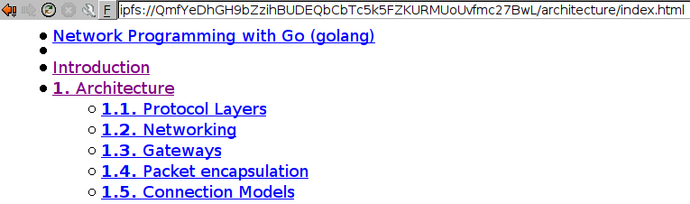
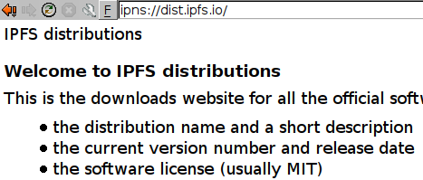

via local IPFS gateway:
git clone http://localhost:8080/ipns/12D3KooWBG1fsFRF4ykpidXVNVnbon5KLfv67pkkGeFstrwftVVb/.git dillo-ipfs
via global IPFS gateway:
git clone https://ipfs.io/ipns/12D3KooWBG1fsFRF4ykpidXVNVnbon5KLfv67pkkGeFstrwftVVb/.git dillo-ipfs
via git-ssb:
git clone ssb://%C35b+MlZ/y5TT1e7SG66eNKEIdX5DRl9PRUxbhvO89k=.sha256 dillo-ipfs
via global git-ssb-web gateway:
git clone https://git.scuttlebot.io/%25C35b%2BMlZ%2Fy5TT1e7SG66eNKEIdX5DRl9PRUxbhvO89k%3D.sha256 dillo-ipfs
cd dillo-ipfs go build ./ipfs.dpi.go mkdir -p ~/.dillo/dpi/ipfs ln -rs ipfs.dpi ~/.dillo/dpi/ipfs test -f ~/.dillo/dpidrc || cp /etc/dillo/dpidrc ~/.dillo/dpidrc echo 'proto.ipfs=ipfs/ipfs.dpi' >> ~/.dillo/dpidrc echo 'proto.ipns=ipfs/ipfs.dpi' >> ~/.dillo/dpidrc dpidc stop
Then you can navigate to ipfs:// and ipns:// URLs in Dillo like any other URLs. Examples:
You will need a local ipfs daemon HTTP gateway running on port 8080.
Collaborate on the Secure Scuttlebutt (SSB) network:
git repo: %C35b+MlZ/y5TT1e7SG66eNKEIdX5DRl9PRUxbhvO89k=.sha256
Discussion thread: %BnJmdowajrPdezpVenAO+tOlVfZbntaEI9CZ9JhIbHs=.sha256
Author: @f/6sQ6d2CMxRUhLpspgGIulDxDCwYD7DzFzPNr7u5AU=.ed25519
Need an invite to SSB? Ask cel on Freenode IRC.